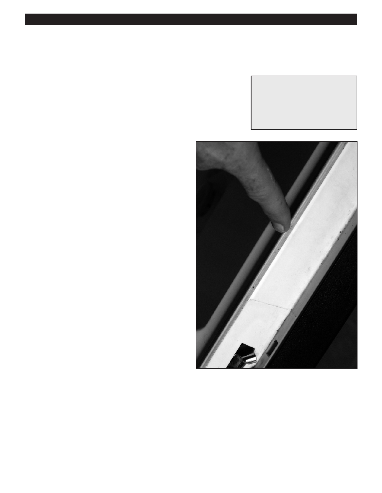

PA RT I C I PA N T R E S O U R C E G U I D E
Replacing a Dishwasher Door Gasket
If water runs down the door of the dishwasher, the problem may be a bad door gasket.
Safety
Tools and Materials Needed
Make sure the power to the dishwasher is off.
Screwdriver
Use lockout/tagout procedures.
Lockout/tagout device
Warm, soapy water
Wear eye protection when working with electrical systems.
Door gasket
How-to Steps
1. Unplug dishwasher or turn off electricity to dishwasher
at main electrical panel.
2. Lockout/tagout the panel.
3. Remove the bottom dish rack.
4. Use a screwdriver to remove the old door gasket.
5. Soak the new gasket in warm, soapy water so it is
easier to work with.
6. Working from the center of the door to the ends, press
or slide the new gasket into its track.
7. If gasket has screws or clips, refasten.
8. Replace bottom dish rack.
9. Turn on electricity to dishwasher.
10. Turn on dishwasher and check operation.
Notes:
67